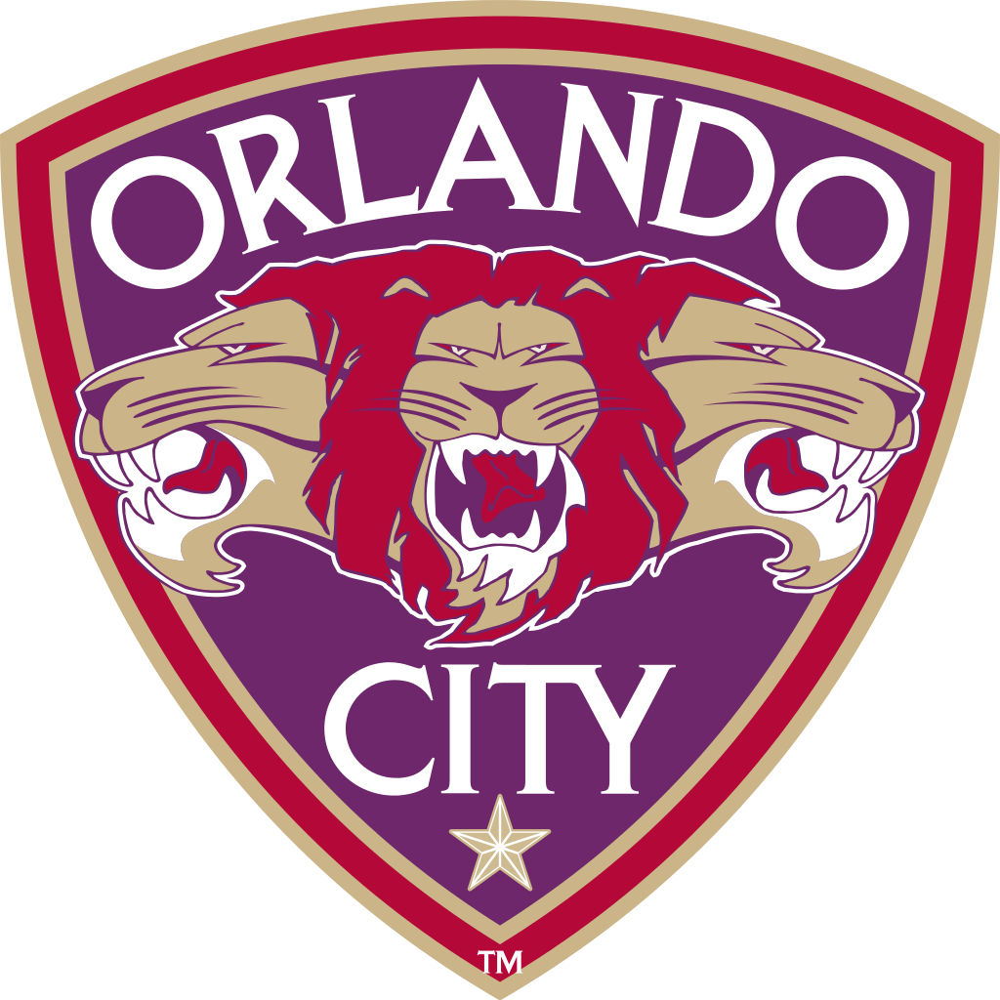
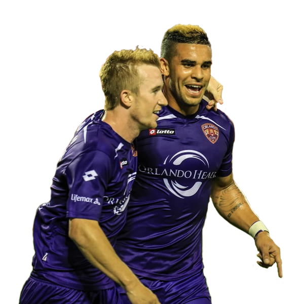
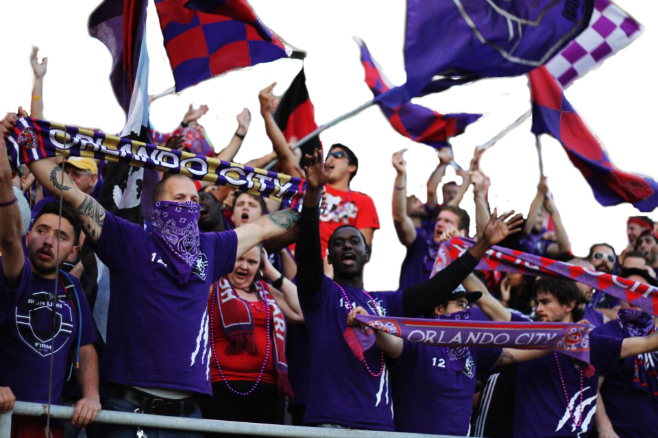
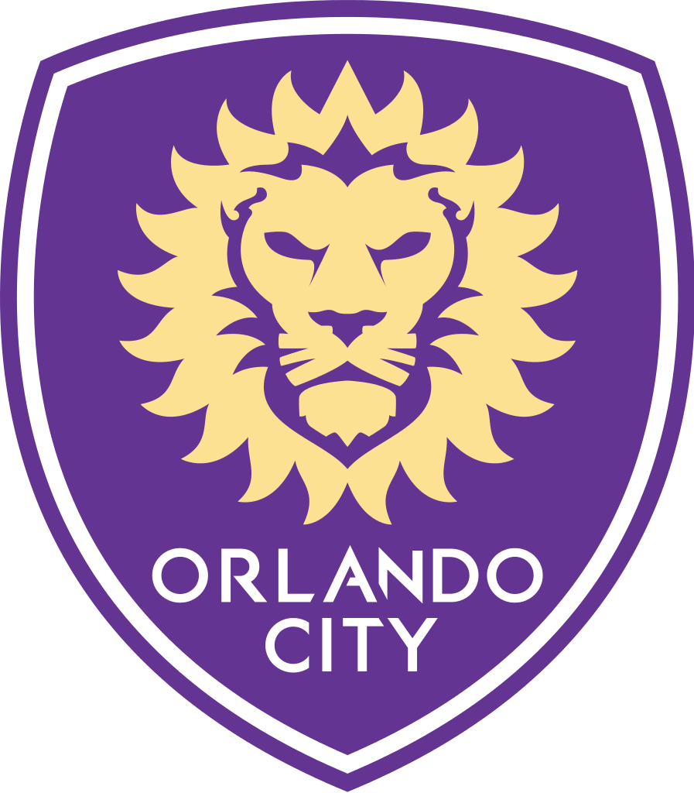
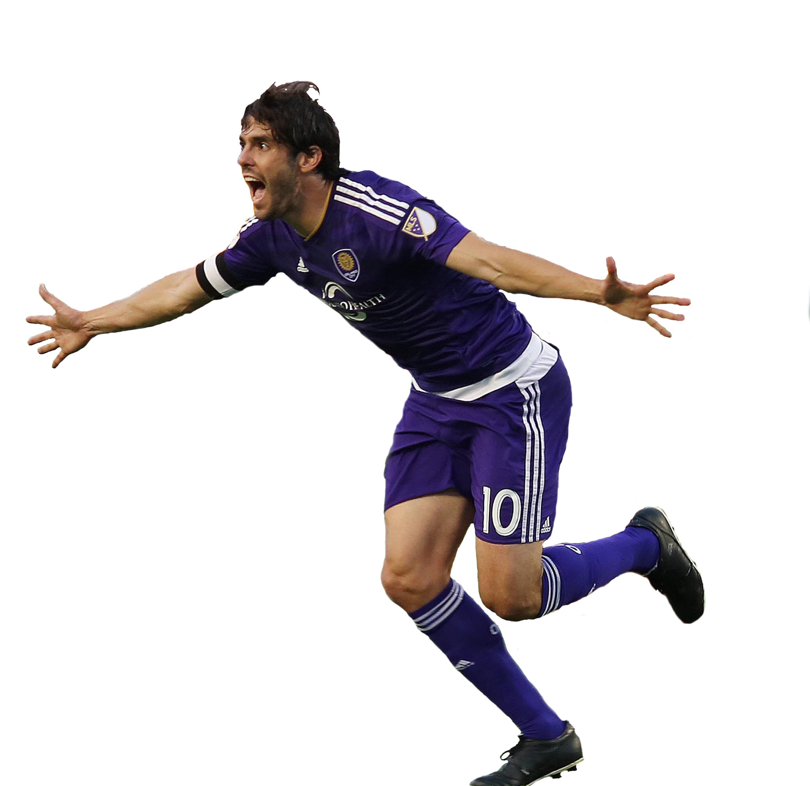
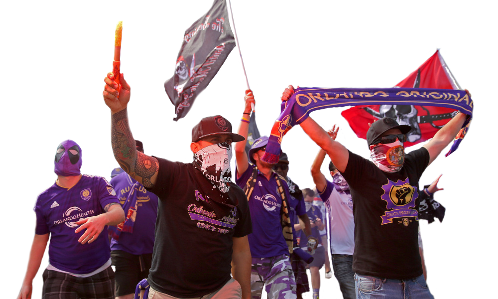
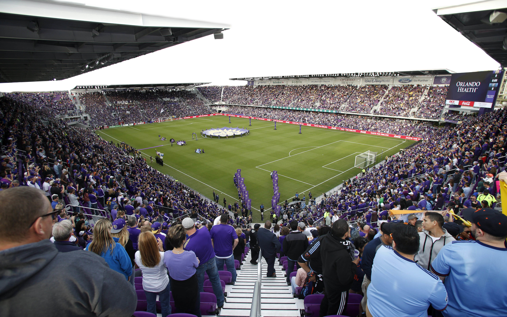

Previously, the club was known as the Austin Aztex FC before they were relocated to Orlando, Florida. Founded in 2008, the team played in the USL First Division.
The History of
USL
United Soccer League
-
-
In there first season in Orlando, the team went on an 11-match undefeated run, closing the first half with a record of 8–1–3. Goalkeeper Miguel Gallardo had a league-high eleven clean sheets. The Lions finished with a 15–3–6 record, winning the 2011 Commissioner's Cup.
-
They won a double, winning the Commissioner's Cup as the top team in the league's regular season, and winning the USL Pro Championship In just their first season in orlando.
-
They beat ASC New Stars in the first round, and Charleston Battery of USL Pro in the second round. After taking an early lead in its third round match against FC Dallas, Dallas scored twice and looked to cruise to the fourth round. Orlando scored a late equalizer in second half stoppage time, but a game-winner right before the end of play to eliminate the Lions from the Open Cup.
2012 & 2013
-
There were approximately 3,500 season ticket holders for the 2012 season. They ended the season with winning the league title with only one lose in the entire season.
-
After winning the championship the season before Orlando City was heading in with great confidence. Only to lose against Wilmington Hammerheads 3-4.
-
This season was the club's third season of existence in Orlando. Orlando finished second in the overall regular-season table.
-
They were declared 2013 USL Pro Champions after beating Charlotte Eagles 7–4 in front of 20,886 fans at the Fifth Third Bank Field at the Citrus Bowl.
2014
-
Before the start of the season it was announced that Orlando City would be the next expansion franchise in Major League Soccer, the league's 21st team, to begin play in 2015.The announcement was made at Church Street Station in downtown Orlando, in the old Cheyenne Saloon.
-
The club's fourth season of existence in Orlando finishing second in the regular season, and their final season before the team was elevated to Major League Soccer.
-
The team entered the season as the defending USL Pro champions, beating Charlotte Eagles in the Championship Game
MLS
Major League Soccer
2015
-
Before the start of the season it wasa announced that Orlando Ciy would be signing former Balón de oro winner Kaka.
-
Orlando City opened the 2015 MLS season at the Citrus Bowl against New York City FC. The match ended in a 1–1 draw after Kaká scored an equalizer. The attendance of 62,510 was the largest crowd to see a soccer match at the Citrus Bowl, the second-largest attendance ever for an MLS team's inaugural home match.
-
They ended the season with a pretty average outcome. Ending up in 7th in the east with a 12-8-14 Record. They did not qualify for the playoffs.
2016
-
2016 was not a very notible year for the club, ending with the most goals conceded in the league. The season ended with 9-14-11 record also the most ties in the league.
-
Adrian Heath, who was the coach of the team since before they moved to Orlando Was Sacked in the middle of the season. Orlando Eventualy hired former NYFC coach Jason Kreis.
2017
Orlando City Soccer

(Midfielder Kevin Molino)


(Midfielder Jamie Watson & Foward Dom Dwyer)

(OCSC Supporters group The Iron Lion Firm)

(Captain Kaka)


(OCSC Supporters March)

(The New Orlando City Stadium)